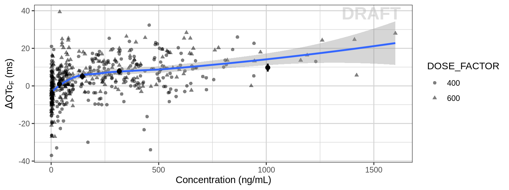
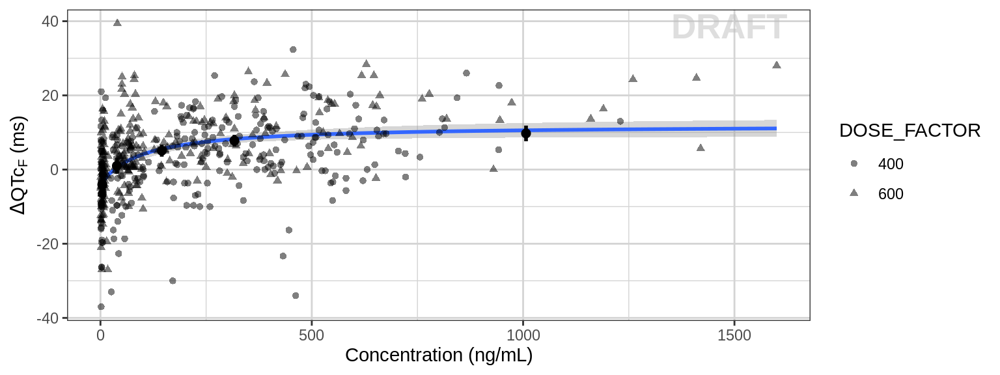
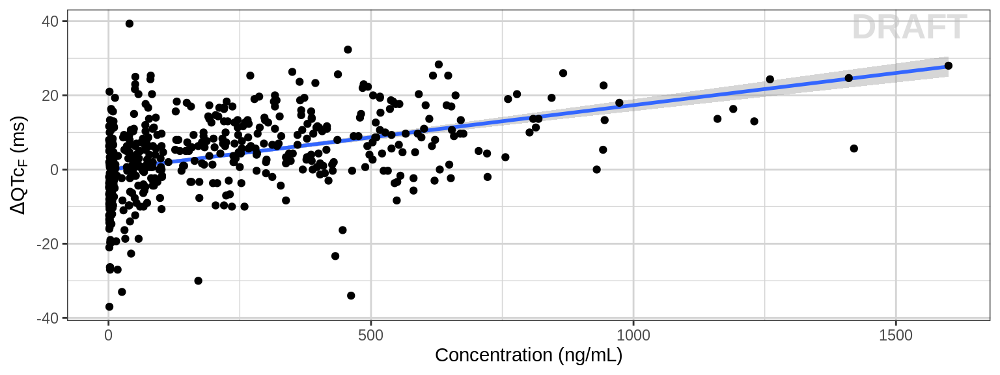
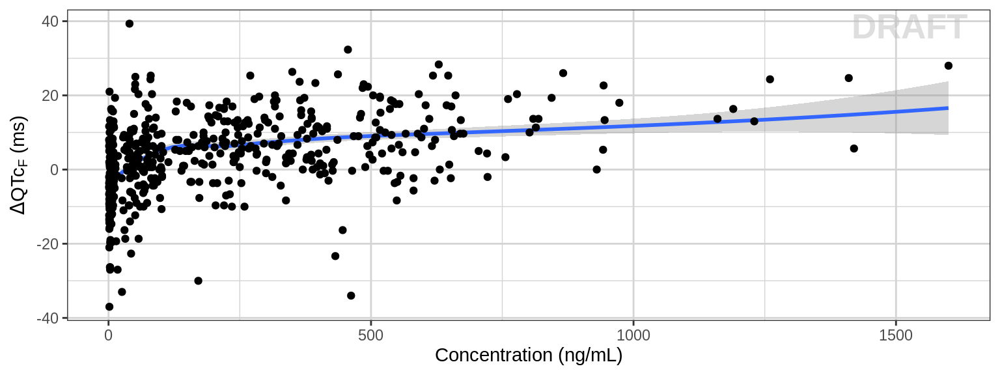
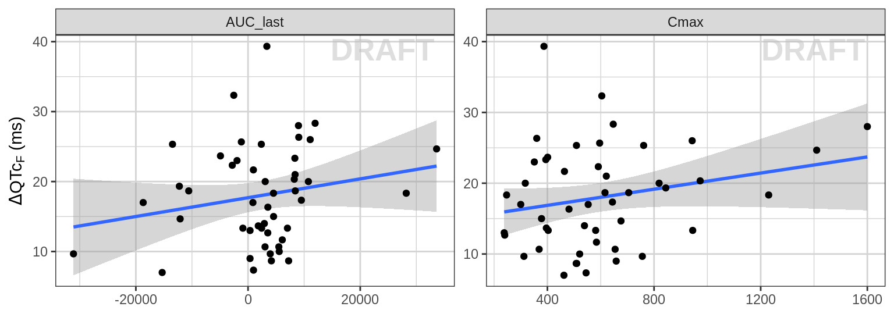
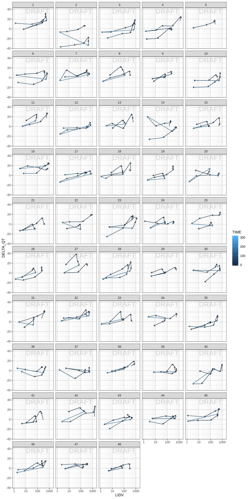

QT Analysis
Chase Brown, Alison Margolskee, Fariba Khanshan, Andy Stein
Environment Setup Code
# xgxr and xgx github raw script url location
xgxr_master_url = "https://raw.githubusercontent.com/Novartis/xgxr/master/"
xgx_master_url = "https://raw.githubusercontent.com/Novartis/xgx/master/"
xgx_chase_url = "https://raw.githubusercontent.com/Novartis/xgx/chase/"
# Standard packages and xgxr
library(tidyverse)
library(xgxr)
library(minpack.lm)
# Add new functions that have not yet been pushed to DaVinci system
source(paste0(xgxr_master_url, "R/xgx_stat_ci.R"))
source(paste0(xgxr_master_url, "R/xgx_stat_smooth.R"))
# Set seed for random number generator (for plots with jitter)
set.seed(12345)
# Flag for labeling figures as draft
status = "DRAFT"
# ggplot settings
xgx_theme_set()Load Dataset
This document contains exploratory plots for QT interval data as well as the R code that generates these graphs. The plots presented here are based on sample data, and the Rmarkdown template to generate this page can be found on Rmarkdown-Template.
# Load Dataset
qt_data <- read.csv(paste0(xgx_chase_url, "Data/QT_Prolongation_dataset.csv"))
# Steady state prof day
SS_PROFDAY = 3
QT_PROFDAYS <- c(1, 4, 7)
# Time between doses
# Units should match units of TIME
# e.g. 24 for QD
# 12 for BID
# 7*24 for Q1W (when units of TIME are h)
TAU = 24
# Ensure dataset has all the necessary columns
qt_data <- qt_data %>%
mutate(ID = SUBJID, # ID column
TIME = TIME, # TIME column name
LIDV = calculated_CONC,
DOSE = DOSE, # DOSE column here (numeric value)
LIDV_NORM = LIDV/DOSE,
LIDV_UNIT = CONC_UNIT,
AGE = AGE,
SEX = SEX,
ETHNICITY = ETHNICITY,
WEIGHT = WEIGHT,
HEIGHT = HEIGHT,
BASE_QT = Derived_Baseline_QTcF,
POST_TRT_QT = Derived_Post_Baseline_QTcF,
DELTA_QT = Change_baseline_derived_QTcF
)
# Make factors from continuous variables
qt_data$ID <- as.factor(qt_data$ID)
qt_data$SEX <- as.factor(plyr::mapvalues(qt_data$SEX,
from = c(1,2),
to = c("M", "F")))
qt_data$DOSE_FACTOR <- as.factor(qt_data$DOSE)
qt_data$SC <- qt_data$LIDV / median(qt_data$LIDV)
qt_data$AGE_GROUP = factor(cut(qt_data$AGE, 2), ordered = TRUE)
# Drop NaNs
qt_data <- drop_na(qt_data)
# Noncompartmental Analysis (NCA) for determining $C_max$ without modeling
NCA = qt_data %>%
group_by(ID, DOSE) %>%
filter(!is.na(LIDV)) %>%
summarize(AUC_last = caTools::trapz(TIME, LIDV),
Cmax = max(LIDV),
DELTA_QT = max(DELTA_QT),
# this part just keeps the SEX and WEIGHTB covariates
SEX = SEX[1],
WEIGHT = WEIGHT[1]) %>%
pivot_longer(names_to = "PARAM",
values_to = "VALUE",
cols = -c(ID, DOSE, SEX, WEIGHT, DELTA_QT)) %>%
ungroup() %>%
mutate(VALUE_NORM = VALUE/DOSE)
# Units and labels
time_units_dataset = "hours"
time_units_plot = "days"
trtact_label = "Dose"
dose_units = "mg"
dose_label = paste0("Dose (", dose_units, ")")
conc_units = unique(qt_data$LIDV_UNIT)[1]#"ng/mL"
conc_label = paste0("Concentration (", conc_units, ")")
AUC_units = paste0("h.", conc_units)
concnorm_label = paste0("Normalized Concentration (", conc_units, ")/", dose_units)
qt_label = latex2exp::TeX("$\\Delta QTc_F$ (ms)")
cmax_label = latex2exp::TeX(paste0("C_{max}(", conc_units, ")"))Overview
Components of Electrocardiograms (ECGs)
There are 3-4 primary components of the an ECG:
- P wave (atrial depolarization)
- QRS complex (ventricular depolarization)
- T wave (ventricular repolarization)
- U wave (papillary muscle repolarization - signal is not always clearly visible)
These features of an ECG are associated with specific action potential components. The phases of the action potential and their mapping with the components of the ECG are:
- Phase 0: Depolarization of the cell when \(Na^+\) channels open, causing \(Na^+\) to rush into the cell
- Phase 1: \(Na^+\) close, \(K^+\) channels open causing \(K^+\) to flow out of the cell
- Phase 2: \(Ca^{2+}\) inward current along with continuing \(K^+\) outward current causes a plataeu in the voltage
- Phase 3: \(Ca^{2+}\) channels close while \(K^+\) are still open, causing a repolarization of the cells. \(Na^+/K^+\) pumps work to restore the baseline concentrations of intracellular/extracellular \(Na^+/K^+\).
- Phase 4: Sinus node causes trigger for \(Na^+\) channels to open again

QT_image
Mean and Confidence Intervals for \(\Delta QTcF\) within each dosage
alpha <- 0.05
DT::datatable(
qt_data %>%
group_by(DOSE_FACTOR) %>%
summarize(mean = mean(DELTA_QT),
lower = mean(DELTA_QT) - qt(1- alpha/2, (n() - 1))*sd(DELTA_QT)/sqrt(n()),
upper = mean(DELTA_QT) + qt(1- alpha/2, (n() - 1))*sd(DELTA_QT)/sqrt(n()),
std_dev = sd(DELTA_QT))
)Concentration vs \(QTc_F\)
First, we look at the change in the QT interval against the concentration to see if there is a relationship. An asymptotic relationship is observed with the use of xgx_stat_ci(); however, this relationship is not well captured by the geom_smooth() loess function.
gg <- ggplot(data = qt_data,
aes(x = LIDV,
y = DELTA_QT))
gg <- gg + geom_point(alpha = 0.5, aes(shape = DOSE_FACTOR))
gg <- gg + geom_smooth(method = "loess", formula = "y ~ x")
gg <- gg + xgx_stat_ci(conf_level = .95, bins = 5, geom = c("errorbar", "point"))
gg <- gg + xgx_annotate_status(status)
gg <- gg + guides(color = guide_legend(""), fill = guide_legend(""))
gg <- gg + labs(x = conc_label, y = qt_label)
print(gg)
Modeling the \(\Delta QTc_F\) relationship with concentration via \(E_{max}\)
In order to better capture the asymptotic form of the data, we use a function (\(y = E_0 + E_{max} \frac{x}{ED_{50} + x}\)) well-suited for this task via xgx_geom_smooth_emax(). Note that the line adn confidence intervals now overlap with the xgx_stat_ci() means and error bars .
gg <- ggplot(data = qt_data,
aes(x = LIDV,
y = DELTA_QT))
gg <- gg + xgx_geom_smooth_emax()
gg <- gg + geom_point(alpha = 0.5, aes(shape = DOSE_FACTOR))
gg <- gg + xgx_stat_ci(conf_level = .95, bins = 5, geom = c("errorbar", "point"))
gg <- gg + xgx_annotate_status(status)
gg <- gg + guides(color = guide_legend(""), fill = guide_legend(""))
gg <- gg + labs(x = conc_label, y = qt_label)
gg
Mixed Effects Models
\(\Delta QTc_{F_{ij}} = QTc_{F_{i}}^{Time j} - QTc_{F_i}^{BL}\)
Model 1: \(\Delta QTc_{F, ij} = (\beta_0 + b_{0i}) + \beta_1 * SC_{ij} + \epsilon_{ij}\)
Where \(SC\) is the scaled concentration (scaled by the median concentration)
model <- lm(formula = DELTA_QT ~ 1 + LIDV + ID,
data = qt_data)
gg <- ggplot(data = qt_data,
aes(x = LIDV,
y = DELTA_QT))
gg <- gg + geom_smooth(method = "lm", mapping = aes(y = predict(model)))
gg <- gg + geom_point()
gg <- gg + xgx_annotate_status(status)
gg <- gg + guides(color = guide_legend(""), fill = guide_legend(""))
gg <- gg + labs(x = conc_label, y = qt_label)
print(gg)
Model 2: \(\Delta QTc_{F, ij} = (\beta_0 + b_{0i}) + log(1 + \beta_1 * SC_{ij}) + \epsilon_{ij}\)
model <- lm(formula = DELTA_QT ~ 1 + log(1 + LIDV) + ID,
data = qt_data)
gg <- ggplot(data = qt_data,
aes(x = LIDV,
y = DELTA_QT))
gg <- gg + geom_smooth(mapping = aes(y = predict(model)))
gg <- gg + geom_point()
gg <- gg + xgx_annotate_status(status)
gg <- gg + guides(color = guide_legend(""), fill = guide_legend(""))
gg <- gg + labs(x = conc_label, y = qt_label)
print(gg)## `geom_smooth()` using method = 'loess' and formula 'y ~ x'
Mixed Effects model with \(C_{max}\) and AUC
\(\Delta QTc_{F, ij} = (\beta_0 + b_{0i}) + log(1 + \beta_1 * C_{max,ij}) + \epsilon_{ij}\)
or #### \(\Delta QTc_{F, ij} = (\beta_0 + b_{0i}) + 1 + \beta_1 * AUC_{ij} + \epsilon_{ij}\)
model <- lm(formula = DELTA_QT ~ 1 + VALUE + ID,
data = NCA)
gg <- ggplot(data = NCA,
aes(x = VALUE,
y = DELTA_QT))
gg <- gg + geom_smooth(method = "lm", mapping = aes(y = predict(model)))
gg <- gg + geom_point()
gg <- gg + xgx_annotate_status(status)
gg <- gg + guides(color = guide_legend(""), fill = guide_legend(""))
gg <- gg + labs(x = latex2exp::TeX("AUC"), y = qt_label)
gg <- gg + facet_wrap("PARAM", scales = "free")
gg <- gg + labs(x = "", y = qt_label)
print(gg)
Hysteresis Plots
The hysteresis plots can indicate the delayed repsonse to exposure. In this case, it appears that the paths are counter-clockwise (individual 28 shows this more clearly), which indicates that there is a delay between an increasing concentration and a decreasing response.
A clockwise path would indicate a delay in an increasing concentration causing an increasing response.
gg <- ggplot(data = qt_data,
aes(x = LIDV,
y = DELTA_QT,
color = TIME))
gg <- gg + geom_path(arrow = arrow(length = unit(0.15,"cm")))
gg <- gg + xgx_annotate_status(status)
gg <- gg + xgx_scale_x_log10()
gg <- gg + theme(panel.grid.minor.x = ggplot2::element_line(color = rgb(0.9,0.9,0.9)),
panel.grid.minor.y = ggplot2::element_line(color = rgb(0.9,0.9,0.9)))
gg + facet_wrap(~ID, ncol = 5)
gg <- gg + labs(x = conc_label, y = qt_label)